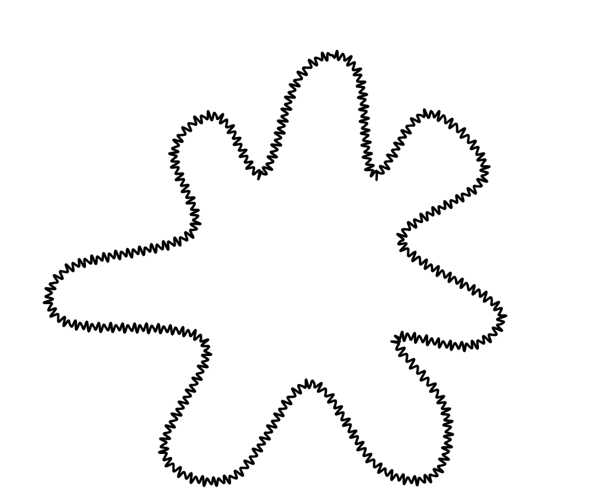
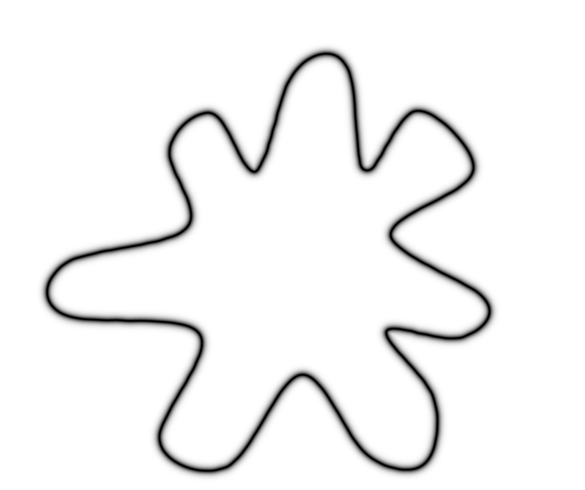
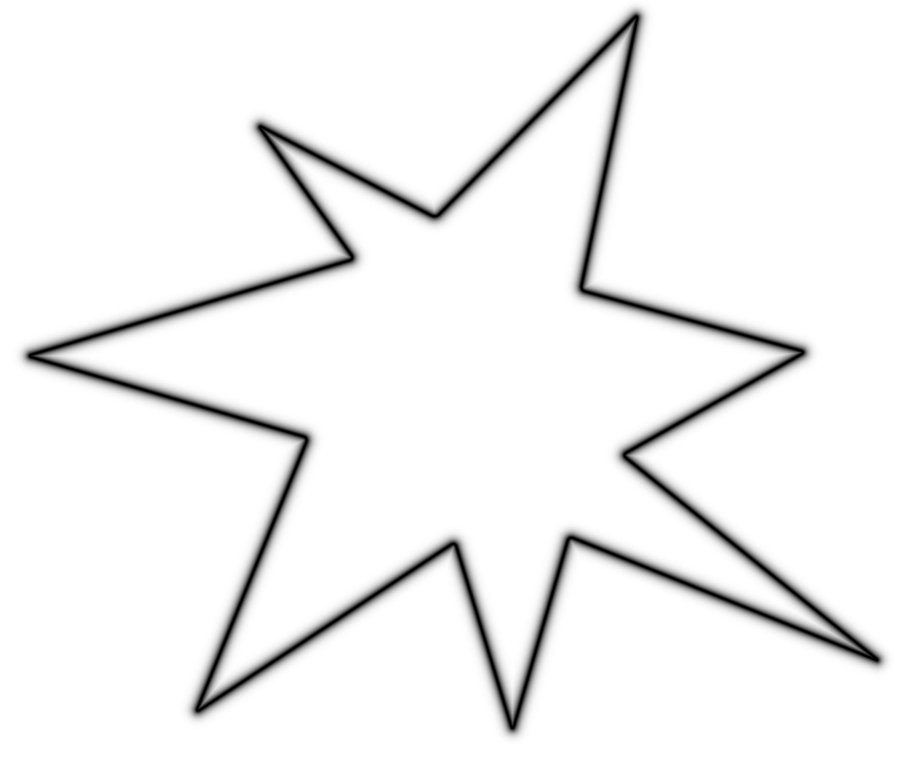
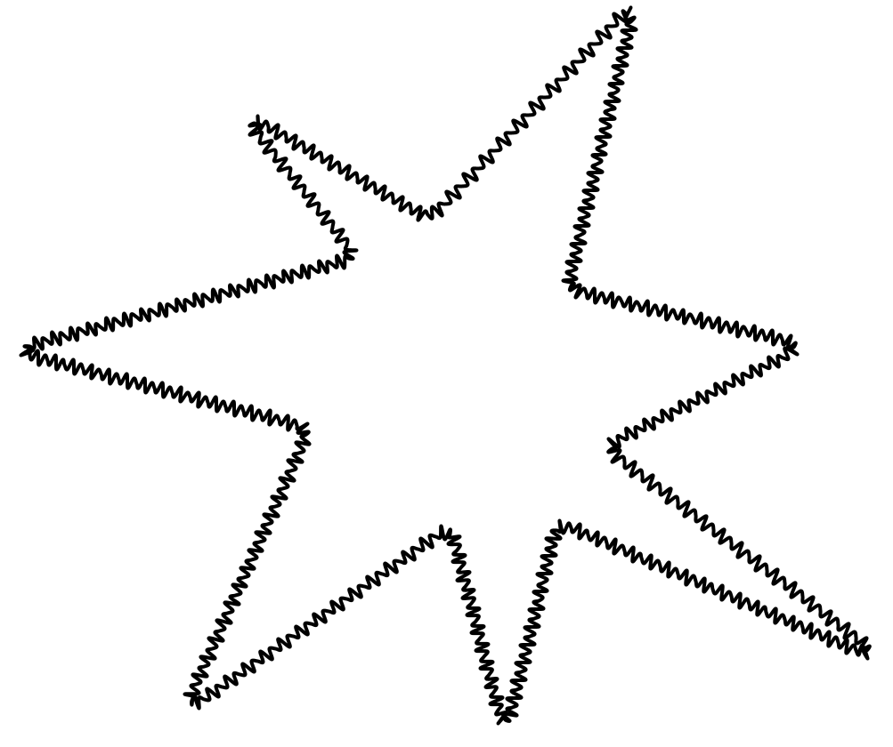

Maximise the window, or press F11 (Windows) / ⌃⌘F (Mac) for full screen. This message disappears by itself.
You are invited to take part in a scientific study on the perception of sounds and images, conducted by Amit Gur and Asterios Zacharakis, University of Antwerp and Aristotle University of Thessaloniki. Please read the following before deciding to participate.
In this task you will see four images and hear four sounds.
Your task is to match each image with the sound that fits it best.
Drag each image and its best-fitting sound to the same group zone. There are four zones — one image and one sound in each.
You can listen to each sound as many times as you like before deciding.
The images and sounds appear in a random order, so their positions carry no meaning.
Please maximise your browser window and keep it that way for the whole task. You can scroll the page at any time — while dragging, just move towards the top or bottom edge of the window.
Next you will set your screen size and do a short sound check, and then the task begins.
To make sure everyone sees the images at the same size, please grab a credit card (or any bank card) and place it next to your screen.
Use the slider to resize the rectangle below until it matches the size of your card exactly.
Please set your volume to a comfortable level, then play the clip.
A voice says three digits. Type them in the box.
Play the clip to continue.




Please listen to all four sounds once more and confirm that each image is paired with the sound that fits it best.
Count all the years together, even if there were breaks. If less than one year, enter 1.
Enter 0 if you never had lessons.
There are no right or wrong answers, and your answers do not affect your participation or payment.
Your response has been recorded.
You will be redirected to Prolific in a moment...